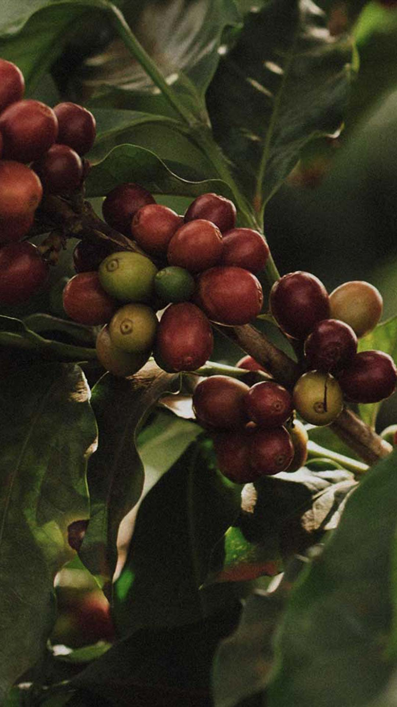
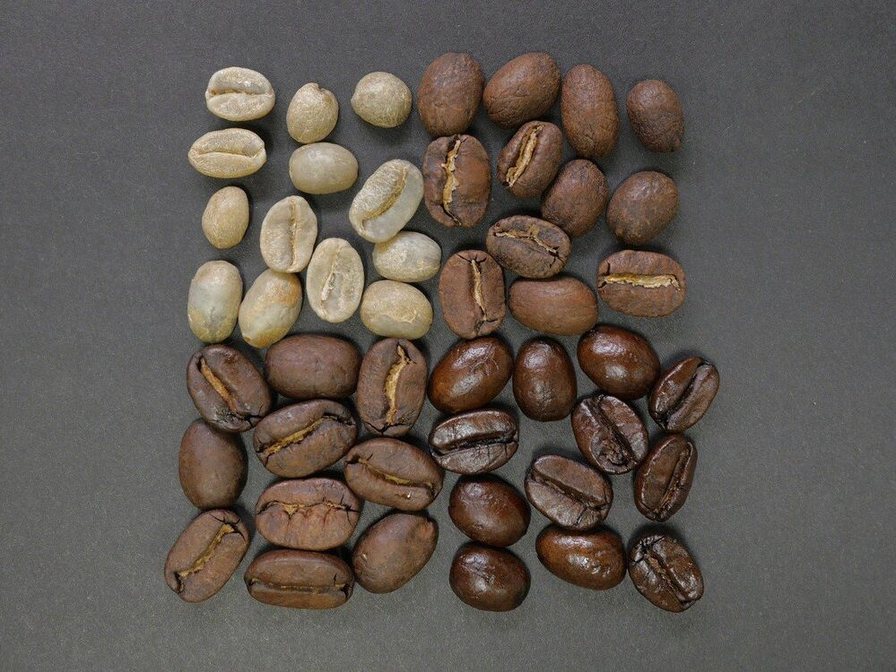

-

Flor do café
-

Fruto do café
-

Grãos e seus níveis de torras
Começar seu dia com um bom café e algum exercicio aeróbicos é extremamente bom? Além de que se você combinar tudo isso com a luz solar, com o nascer do sol, ou logo quando acordar. Essa combinação pode trazer uma produtividade muito maior ao seu dia, além do mais que seu sono vai ser mais "gostoso".
execícios aeróbicosO café tem propriedades muito interesantes, uma delas, a mais conhecida, o poder de deixar-nos despertados, ou com uma falta de cansaço, por conter a cafeína. Uma outra curiosidade é que a cafeina pode atuar na memória, Atila Iamarino conta em um vídeo, publicado no youtube, que diz, que algumas flores podem produzir cafeína, e dar um pouco ao inseto que foi pegar o polém e mais uma outra substância, fazendo que o inseto lembre sempre daquela flor. Curiosamente tbm funciona com os Seres Humanos, além do café ser um vício para muitos, dependendo de como você toma o café, você pode estar "configurando" sua mente a gostar mais daquilo, digamos que você tome café sem açúcar, seu gosto vai estar propíncio a você gostar de coisas com menos açúcar.
Vídeo do Atila